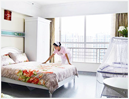

-
【叮当到家】用专业贴心服务，呵护孕妇健康
孕妇在怀孕期间，
对室内环境的整洁度、清洁度、空气质量有着较高要求，
好的居住环境直接决定了孕妇的心情和胎儿的健康。
-
【叮当到家】采用食材水果萃取工艺开发专用清洁剂，纯天然无污染，细微之处只为您和您家宝宝的健康
-

- 
【叮当到家】孕妇专用家政保洁，为孕期家庭量身定制家政保洁方案
- 传统保洁：普通的清洁剂大多以石油化工产品为原料，
- 还加有各种添加剂，比如强酸、助溶剂、稳定剂、增白剂等。
- 使用过程中的残留物和挥发的气味对特殊敏感人群（如孕妇、婴幼儿等）的皮肤和呼吸道会产生一定的刺激，甚至会引起过敏。
专用清洁剂
天然一一我们身边的食品级清洁剂。
孕妇专用：我们使用一些我们身边的天然清洁剂（水果原料、天然植物、海盐等），成分天然，不含化学毒害，不含任何铅汞等化学成分，温和无刺激。

- 传统保洁：工具交叉使用，多次使用旧抹布，如消毒不彻底，会有病毒细菌残留。
专用工具消毒杀菌
专属一一专用工具为您定制，工具用品全部事前消毒
孕妇专用：工具用品事前消毒，全新抹布，现场拆封后再用天然手工皂清洗，做到为用户专属定制。

- 传统保洁：只针对表面区域的清理打扫，床位、沙发、家具等死角区域隐藏很多灰尘细菌。
深度清洁
无死角一一360°全方位除尘清洁
孕妇专用：专注死角清洁，如房顶天花板除尘；床位、沙发、柜子等家具底下除尘清洁；厨柜内部清洁；地漏、排水口深度清理等，每月一次。

- 传统消毒：经常使用消毒液、洁厕灵、清洁剂混用，这样易造成氯中毒，引起呼吸道的严重损伤，对眼睛、黏膜和皮肤有高度刺激性，对女性健康尤其孕妇危害很大。
厨、卫高温消毒杀菌
高温一一物理消毒杀菌法，全程保障零污染
孕妇专用：全程使用高温进行消毒杀菌，从而避免二次污染，不仅可杀死一般的细菌，对细菌芽胞也有杀灭效果，是最可靠、应用最普遍的物理灭菌法。

- 传统清洗：经常使用清洗液、塑壳清洗剂等，虽然清洁起来方便、快速、干净，但化学物品难免残留有害物质，，从而引发呼吸系统疾病，如咳嗽、胸痛等。
空调滤网、纱窗清洁消毒
手工清洗一一让每个通风环节清新零污染

孕妇专用：全程手工清洗，清洗干净后再用纯天然手工皂清洗消毒。宁愿花2倍时间，坚决不用化学剂品，清除灰尘和病毒，让每个通风环节，清新零污染。
- 孕妇在怀孕期间，除了适量的运动和就餐外，有一大部分时间需要在沙发和床上静养。
- 沙发和床铺是螨虫极易滋生的场所，螨虫不及时清除可引起丘疹性荨麻疹，身上也会出现无名的红肿、水疱、剧痒等。
- 【叮当到家】采用专业级除螨仪器，有效清除床铺沙发中的螨虫和细菌。
床铺、窗帘、沙发除螨杀菌
安心一一拒绝螨虫，坐着、躺着100个放心
常用物品消毒杀菌
贴心一一拒绝细菌，常用物品一律消毒杀菌
手机、电脑、ipad、遥控器、拖鞋、开关、门把手等家庭常用常接触物品，都是日常细菌聚集的“重灾区”， 孕妇在怀孕期间，尤其注意。
【叮当到家】细微之处百倍用心，对孕妇经常接触物品，进行有效的消毒杀菌。


-
服务标准
严格要求一一采用白手套进行质量检查
传统要求：服务人员准时，干活干净效率高，态度好等
孕妇专用：杜绝迟到早退；进门就出示身份证、健康证、技能证
服务过程：工作装及工具齐全，服务过程中穿着工装、穿鞋套、带口罩
服务结束：常见区域（如桌面、台面等）采用白手套进行质量检查
-

服务项目
包月套餐
套餐介绍
- 零污染孕期保洁
- 4次
- 厨房高温消毒杀菌
- 4次
- 卫生间高温消毒除菌
- 4次
- 空调滤网清洗(最多3个)
- 1次
- 纱窗清洗
- 2次
- 床铺除螨杀菌(最多3个)
- 1次
- 窗帘高温杀菌(最多3个)
- 1次
- 沙发除螨杀菌(最多3组)
- 1次
- 墙、棚掸尘
- 2次
- 全方位吸尘(地面地毯门垫、窗槽、窗帘、沙发)
- 2次
- 地漏下水口深度清理
- 1次
- 常用常接触物品除菌消毒(手机、电脑、ipad、遥控器、拖鞋、开关、门把手)等
- 4次
- 1999元
服务优势
-

给力！至少2名家政人员
-

够细！至少服务4小时
贴心客服
-

-
010-56429112
我们用心倾听
服务时间：9:30-18:30
关注微信公众号获取更多服务信息

消费提醒

商家介绍
- 与普通家政相比，整体上具有明显差异化优势
- 天 然——我们身边的食品级清洁剂
- 专 属——专用工具为您定制，工具用品全部事前消毒
- 无 死 角——360°全方位清洁整理
- 高 温——物理消毒杀菌法，全程保障零污染
- 手工清洗——让每个通风环节清新零污染
- 安 心——拒绝螨虫，坐着、躺着100个放心
- 贴 心——拒绝细菌，常用物品一律消毒杀菌
- 严格要求——采用白手套进行质量检查

-
叮当到家用专业贴心服务，科学呵护孕妇健康，
为孕期家庭量身定制孕妇专用家政保洁，
对室内环境的整洁度、清洁度、空气质量秉持高标准要求，
为孕妇的心情和胎儿的健康提供双重保护。
公司对服务人员进行持久的服务素质培养，
通过礼仪培训、技能培训等，保障服务人员具有较高的行业服务水准。
品牌故事